Kindle E-Reader Device
Enhancing social connection with like-minded readers

UX Researcher & UX/UI Designer
Myself and 2 other UX designers. 2 weeks.
User interviews, Affinity Mapping, Competitive & Comparative (C&C) Analysis, Journey Mapping, Persona, Information Architecture (IA), Sketching, Wireframing, Prototyping, Usability Testing, Co-workshop Facilitation, Presentation
Figma, Illustrator, Photoshop Google Workspace, Zoom, Slack
Kindle device is an e-reader that allows users to carry a library worth of books in their palm.
Since its launch in 2007, Kindle has evolved over the years with revolutionary technology, from bringing in audio books to launching the app version, from acquiring Goodreads to featuring handwriting support.
Today, Kindle has over 30 million users in just the United States, the continuous rise in popularity of ebooks remains strong.
Based on our user research, there is a clear desire to engage in discussions about books and topics of interest with like-minded individuals.
However, current ebook platforms, including Goodreads which is part of the Kindle ecosystem, lack sufficient social interaction features.
Although Goodreads serves as the nearest platform for this purpose, users primarily use it for discovering books rather than social engagement, largely due to its limitations in that regard.
Fueled by hashtags like #booktok and #bookstagram, book lovers are finding a vibrant online community for shared reading experiences.
How can Kindle evolve beyond just an e-reader to become a social platform for book lovers?
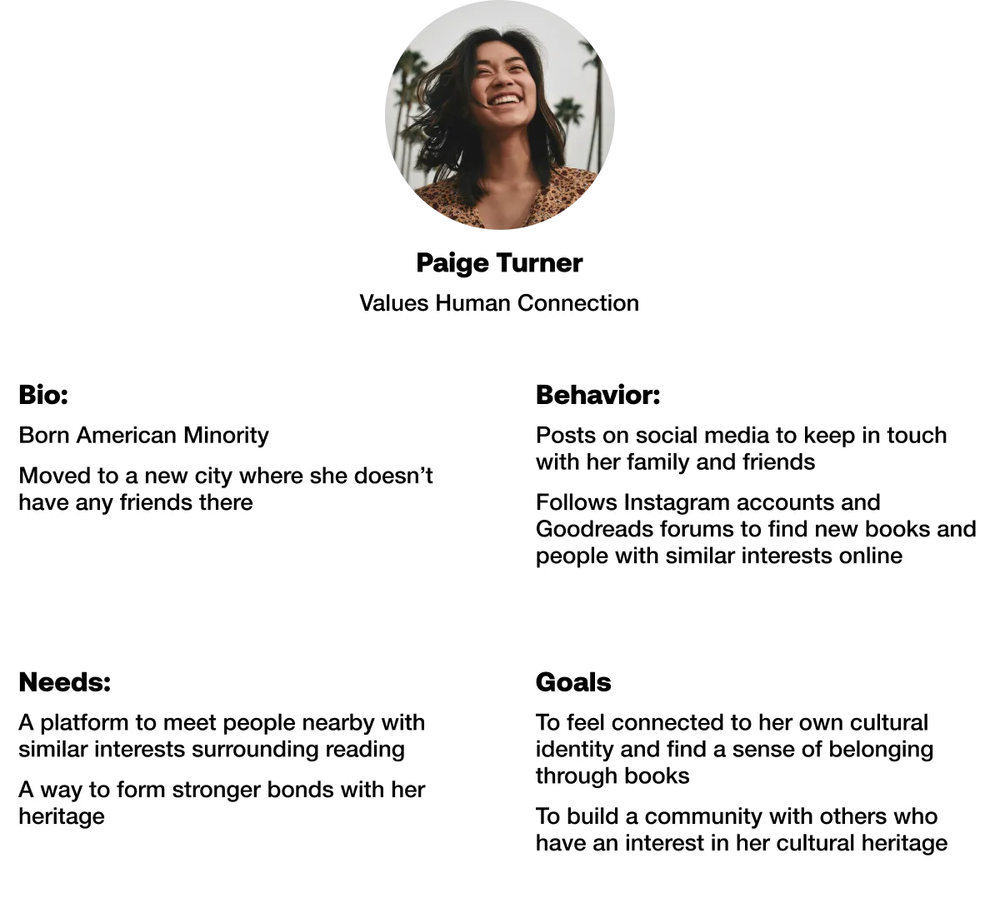
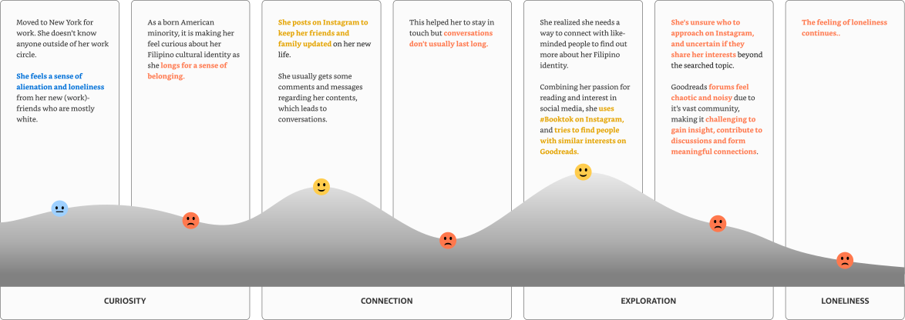


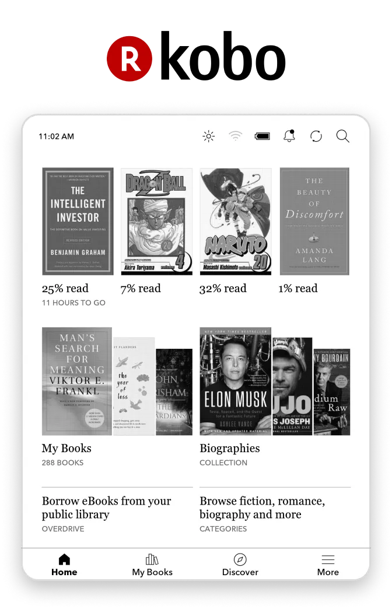
Clear navigation
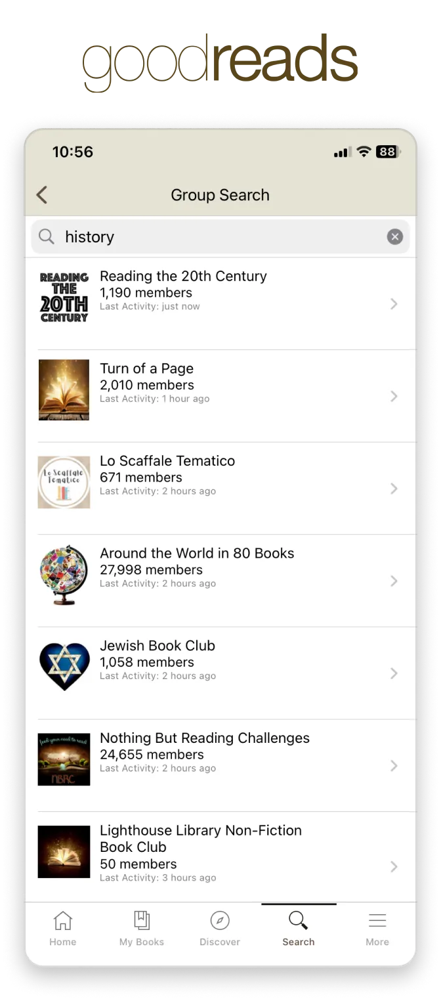
Book clubs communicate in forum fashion
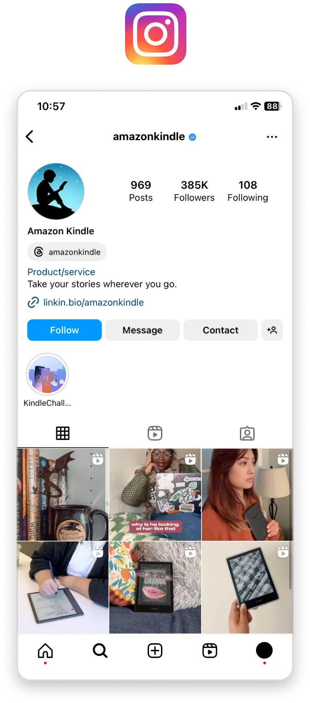
User-specific contents within a singular tab integration
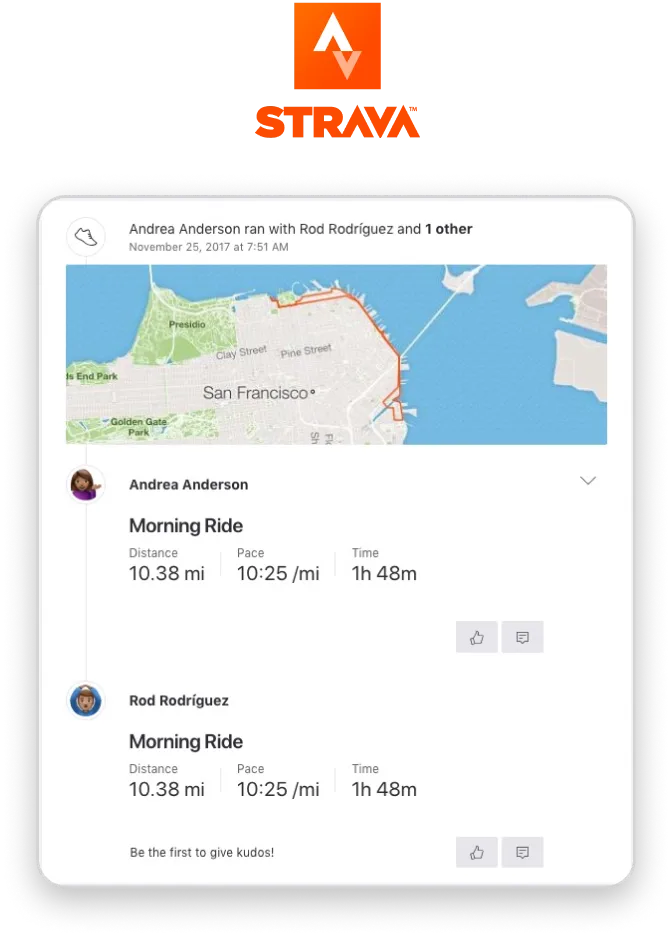
Meetup and challenge facilitation
The 1st half of the flow is to help users explore people with similar interests in the same city as them.
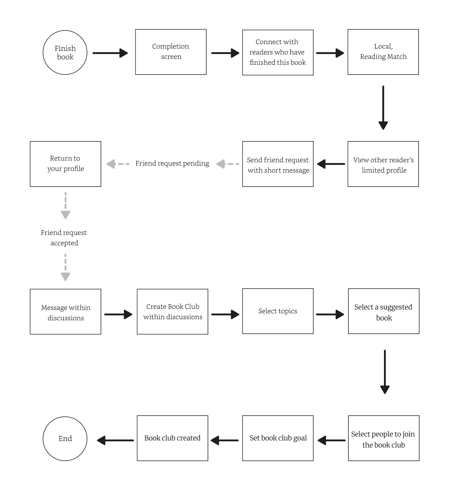
The 2nd half is to help users connect with that person through something they both enjoy.
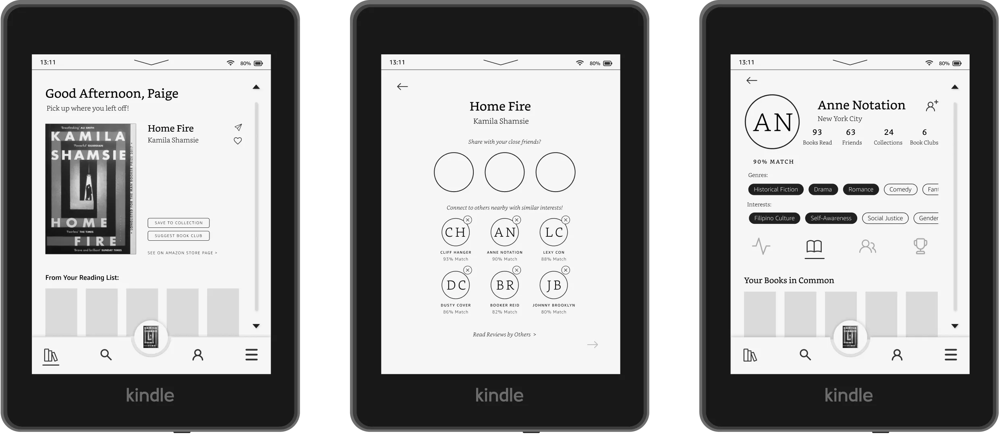
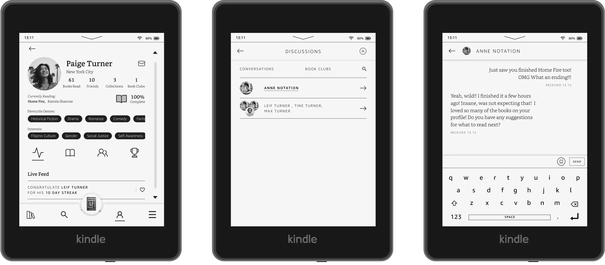
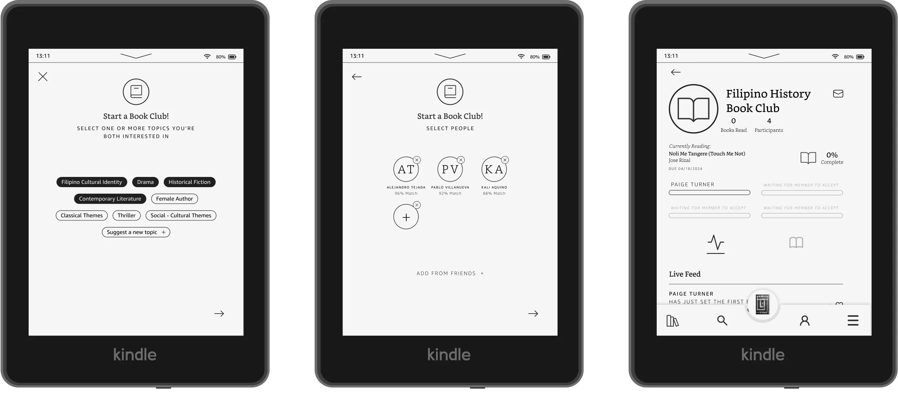
We categorized the IA into 4 sections: library, discover, profile, and more, for clear navigation.
Based on research, users find the minimalist navbar unclear and difficult to navigate.
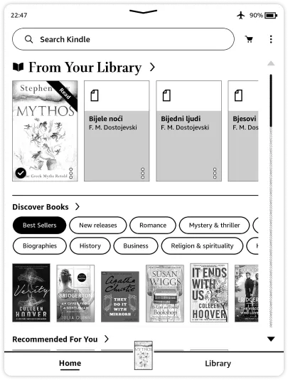
The Home page prioritizes users, creating a welcoming environment. To find new books, users can visit the "Discover" tab.
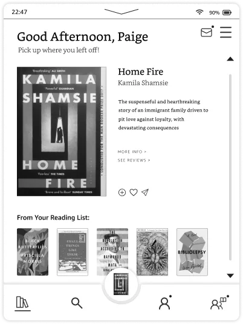
Our research indicates that users perceive the home page as overwhelming, with Amazon aggressively promoting book sales.
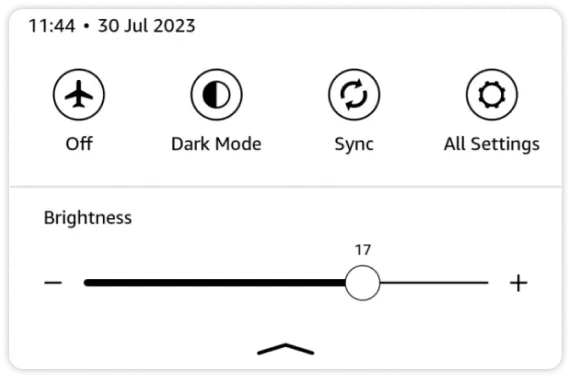
We added a focus mode for readers who prefer uninterrupted reading. We anticipate potential future use of color e-ink, hence the inclusion of a B&W mode.
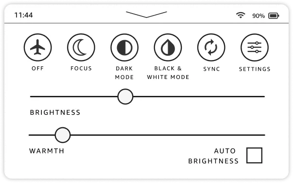
With limited social features on the current Kindle device, there's no necessity to restrict social capabilities. The current device exclusively uses B&W technology.
UX design extends beyond just mobile apps and websites. This project provided me with a great opportunity to delve into something distinctive, with constraints unlike those of other digital devices.
I didn't grasp the allure of owning a Kindle initially, but this project has revealed so many facets of the product that I'm growing to appreciate it.
As with any project, there were inevitable disagreements, yet this is the beauty of teamwork – the ability to bounce ideas off one another to create something extraordinary. I firmly believe we achieved just that. It was an honor collaborating with such talented and creative individuals.
I didn't realize the gift I've possessed over the years until my cohort in this project pointed it out to me - my clarity of mind.
While it may be considered a state of mind, I believe it's also what enabled me to stay organized and attentive to detail throughout my life. This quality manifested in the project as it aided me in synthesizing data, identifying root problem, and guiding the team back on course when we veer off track.